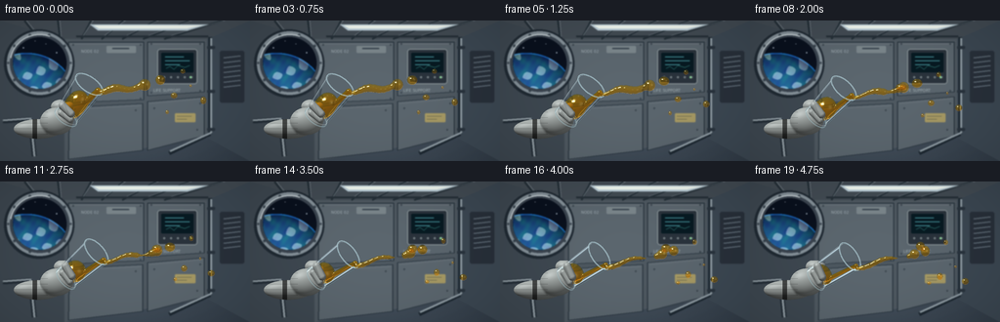
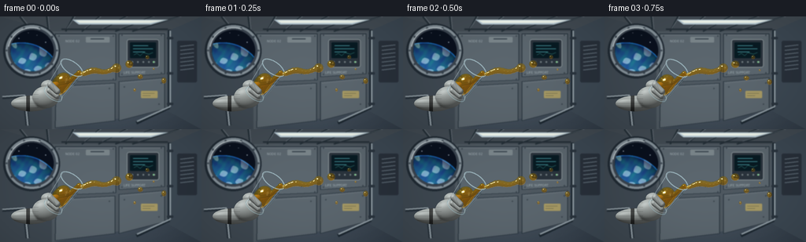

CODING AGENTS AS PIXEL WORLD MODELS
traex/GPT-6.1-Sol · mechanics_0007
点击播放 · 原生 RGB 像素
逐轮保存的候选
回放视频、检查图与代码变化。
每份候选均可单独播放。实际图片检查记录在下方工具轨迹中。
候选 01播放与检查图
点击播放 · 原生 RGB 像素


展开代码变化
--- 上一保存版本
+++ 本次保存版本
@@ -0,0 +1,385 @@
+"""Procedural RGB microgravity study: geometry, optics and motion only."""
+from pathlib import Path
+import json
+import numpy as np
+from PIL import Image, ImageDraw, ImageFont, ImageFilter
+import artifact_io
+
+ROOT=Path(__file__).resolve().parent
+SPEC=json.loads((ROOT/'task_spec.json').read_text())
+W,H=SPEC['width'],SPEC['height']
+S=3
+WW,HH=W*S,H*S
+rng=np.random.default_rng(15)
+Y,X=np.mgrid[0:HH,0:WW].astype(np.float32)
+# Orthographic foreground camera, in pixel-sized world units.
+PX=X/S-128
+PY=72-Y/S
+
+
+def background():
+ y,x=np.mgrid[0:HH,0:WW].astype(float); x/=S;y/=S
+ v=np.exp(-((x-125)/140)**2-((y-40)/130)**2)
+ arr=np.stack([33+40*v+8*y/144,43+43*v+8*y/144,52+45*v+10*y/144],-1)
+ noise=rng.normal(0,.5,(HH,WW,1));arr+=noise
+ im=Image.fromarray(np.uint8(np.clip(arr,0,255)))
+ d=ImageDraw.Draw(im)
+ def poly(p,c):d.polygon([(int(a*S),int(b*S)) for a,b in p],fill=c)
+ def line(p,c,w=1):d.line([(int(a*S),int(b*S)) for a,b in p],fill=c,width=max(1,int(w*S)))
+ def box(p,c,r=0,outline=None,width=1):
+ q=tuple(int(a*S) for a in p)
+ if r:d.rounded_rectangle(q,radius=r*S,fill=c,outline=outline,width=width*S)
+ else:d.rectangle(q,fill=c,outline=outline,width=width*S)
+ def ellipse(p,c,outline=None,w=1):d.ellipse(tuple(int(a*S) for a in p),fill=c,outline=outline,width=max(1,w*S))
+ # Wall modules, ribbed ceiling, and continuous station handrails.
+ poly([(0,0),(256,0),(212,19),(66,19)],(66,75,83))
+ poly([(0,0),(66,19),(66,144),(0,144)],(62,72,81))
+ poly([(212,19),(256,0),(256,144),(212,120)],(60,72,83))
+ poly([(66,19),(212,19),(212,120),(66,144)],(78,88,96))
+ for q in [[(70,22),(147,22),(147,81),(70,84)],[(151,22),(209,22),(209,73),(151,77)],[(71,89),(146,85),(146,133),(70,142)],[(151,83),(209,78),(209,118),(151,133)]]:
+ poly(q,(91,102,110));line(q+[q[0]],(40,51,61),1.2)
+ line([(q[0][0]+2,q[0][1]+2),(q[1][0]-2,q[1][1]+2)],(122,131,136),.6)
+ for x0 in [25,59,93,126,160,194,228]:
+ line([(x0,0),(66+(x0-66)*.63,19)],(35,46,54),2)
+ line([(x0+2,0),(67+(x0-66)*.63,17)],(111,121,129),.7)
+ poly([(92,4),(213,4),(192,10),(100,10)],(185,204,214))
+ poly([(96,5),(207,5),(192,8),(101,8)],(242,249,240))
+ line([(78,16),(213,16)],(37,47,55),2)
+ # Station window ring.
+ ellipse((4,9,76,79),(32,42,51))
+ ellipse((7,11,74,76),(133,145,153))
+ ellipse((10,14,71,73),(59,69,80))
+ ellipse((13,17,68,70),(9,16,29))
+ # A tiny Earth limb behind the porthole, rendered as a shaded textured sphere.
+ win=((x-40.5)/27.5)**2+((y-43.5)/26.5)**2<=1
+ er=((x-27)/51)**2+((y-82)/49)**2
+ earth=er<1
+ nz=np.sqrt(np.maximum(0,1-er))
+ tex=np.sin(x*.35+np.sin(y*.23)*2)+.5*np.cos(y*.43-x*.17)+.4*np.sin(x*.8+y*.5)
+ clouds=(np.sin(.12*x+.21*y+2*np.sin(.10*y))+.6*np.sin(.4*x-.17*y)>.62).astype(float)
+ light=np.clip(.35+.65*nz+.2*(60-y)/60,.15,1)
+ ec=np.stack([15+24*nz+clouds*105,65+52*nz+clouds*90+12*tex,117+56*nz+clouds*66],-1)*light[...,None]
+ ec+=np.exp(-((np.sqrt(np.maximum(er,0))-1)/.019)**2)[...,None]*np.array([26,107,190])
+ ar=np.asarray(im).copy(); ar[win&earth]=np.uint8(np.clip(ec[win&earth],0,255)); im=Image.fromarray(ar);d=ImageDraw.Draw(im)
+ for xx,yy,rr in [(24,28,.5),(47,24,.3),(58,33,.4),(20,36,.3),(36,21,.3)]:ellipse((xx-rr,yy-rr,xx+rr,yy+rr),(205,220,236))
+ for ang in np.linspace(0,2*np.pi,10,endpoint=False):
+ xx=40.5+32*np.cos(ang); yy=43.5+30*np.sin(ang)
+ ellipse((xx-1.15,yy-1.15,xx+1.15,yy+1.15),(43,54,64));line([(xx-.5,yy),(xx+.5,yy)],(148,160,166),.45)
+ d.arc((10*S,14*S,71*S,73*S),190,290,fill=(213,223,226),width=S)
+ # Equipment recess with illuminated display.
+ box((161,29,202,65),(42,51,60),3,outline=(136,145,149))
+ box((165,33,198,53),(7,26,34),1)
+ for yy,ll in [(37,19),(41,25),(45,15)]:
+ box((169,yy,169+ll,yy+.65),(92,185,193))
+ line([(170,49),(174,47),(178,50),(182,46),(189,48),(194,46)],(76,181,169),.6)
+ for xx in [167,174,181,188,195]:ellipse((xx,57,xx+2,59),(50,57,63),outline=(121,132,137))
+ ellipse((194,57,196,59),(142,218,154))
+ box((225,31,250,84),(40,48,58),2)
+ for j in range(7):line([(229,38+j*5),(246,36+j*5)],(99,112,123),1.5)
+ # Hoses, rails, labels and hatch architecture.
+ line([(215,17),(215,116),(173,136)],(28,39,48),4)
+ line([(216,18),(216,115),(174,134)],(135,148,157),2)
+ line([(215.7,18),(215.7,115),(174,134)],(184,194,196),.6)
+ for yy in [26,71,110]:box((212,yy,220,yy+3),(41,51,61),1)
+ line([(3,103),(31,101),(35,139)],(34,44,53),5)
+ line([(3,102),(31,100),(35,139)],(151,163,170),2.3)
+ box((109,26,139,33),(123,134,139),1)
+ box((115,28,132,29),(52,63,73))
+ # Small utilitarian lettering, not an overlay.
+ try:font=ImageFont.truetype('/usr/share/fonts/truetype/dejavu/DejaVuSans.ttf',4*S)
+ except:font=ImageFont.load_default()
+ d.text((157*S,69*S),'LIFE SUPPORT',fill=(163,176,180),font=font)
+ d.text((83*S,29*S),'NODE 02',fill=(162,174,180),font=font)
+ box((179,95,200,104),(167,154,100),1)
+ line([(181,98),(196,98)],(57,63,62),.6);line([(181,101),(191,101)],(57,63,62),.6)
+ for xx,yy in [(75,25),(144,25),(75,81),(144,80),(155,24),(205,24),(155,74),(205,72),(76,94),(139,92),(158,90),(205,85),(202,112)]:
+ ellipse((xx-.7,yy-.7,xx+.7,yy+.7),(44,55,65));line([(xx-.25,yy-.25),(xx+.25,yy+.25)],(157,166,168),.3)
+ # Shallow depth of field holds the optical foreground in focus.
+ im=im.filter(ImageFilter.GaussianBlur(.6*S))
+ return np.asarray(im).astype(np.float32)/255
+
+BG=background()
+
+def normalize(v):return v/(np.linalg.norm(v,axis=-1,keepdims=True)+1e-8)
+LIGHT=normalize(np.array([-.48,.69,.54],np.float32))
+LIGHT2=normalize(np.array([.7,.1,.65],np.float32))
+
+def smoothmin(a,b,k):
+ h=np.maximum(k-np.abs(a-b),0)/k
+ return np.minimum(a,b)-h*h*k*.25
+
+def sphere(p,c,r):return np.linalg.norm(p-c,axis=-1)-r
+
+def capsule(p,a,b,r1,r2=None):
+ r2=r1 if r2 is None else r2
+ ba=b-a;pa=p-a;h=np.clip(np.sum(pa*ba,axis=-1)/np.dot(ba,ba),0,1)
+ return np.linalg.norm(pa-h[...,None]*ba,axis=-1)-(r1+(r2-r1)*h)
+
+def ellipsoid(p,c,rad):
+ q=(p-c)/rad
+ k0=np.linalg.norm(q,axis=-1);k1=np.linalg.norm(q/rad,axis=-1)
+ return k0*(k0-1)/(k1+1e-8)
+
+
+def raymarch(sdf, bbox, zmax=65,zmin=-38):
+ x0,y0,x1,y1=bbox
+ ix=np.where((PX>=x0)&(PX<=x1)&(PY>=y0)&(PY<=y1))
+ p=np.stack([PX[ix],PY[ix],np.full(len(ix[0]),zmax,np.float32)],-1)
+ hit=np.zeros(len(p),bool);active=np.ones(len(p),bool)
+ for _ in range(105):
+ ids=np.flatnonzero(active)
+ if not len(ids):break
+ ds=sdf(p[ids]);newhit=ds<.07
+ hit[ids[newhit]]=True;active[ids[newhit]]=False
+ walk=ids[~newhit]
+ p[walk,2]-=np.maximum(ds[~newhit]*.85,.04)
+ active[walk[p[walk,2]<zmin]]=False
+ ids=np.flatnonzero(hit);pts=p[ids]
+ eps=.09
+ nor=np.stack([sdf(pts+np.array([eps,0,0]))-sdf(pts-np.array([eps,0,0])),sdf(pts+np.array([0,eps,0]))-sdf(pts-np.array([0,eps,0])),sdf(pts+np.array([0,0,eps]))-sdf(pts-np.array([0,0,eps]))],-1)
+ return (ix[0][ids],ix[1][ids]),pts,normalize(nor)
+
+
+def glove(img,base,a,b,front=False):
+ # A lightly padded pressure glove supports the slowly rotating tumbler.
+ if not front:
+ objects=[('e',np.array([-89,-39,1.]),np.array([25,10,9.])),('e',np.array([-70,-31,8.]),np.array([17,14,10.])),('e',base-b*11+a*8+np.array([0,0,-8]),np.array([10,7,8]))]
+ def sdf(p):
+ out=ellipsoid(p,*objects[0][1:])
+ for ob in objects[1:]:out=smoothmin(out,ellipsoid(p,*ob[1:]),2.2)
+ return out
+ mask,p,n=raymarch(sdf,(-123,-56,-42,-9),45,-20)
+ else:
+ c1=base+a*10-b*10+np.array([0,0,16]);c2=base+a*8+b*2+np.array([0,0,18])
+ c3=base+a*2-b*7+np.array([0,0,15]);c4=base+a*2+b*5+np.array([0,0,16])
+ def sdf(p):return smoothmin(capsule(p,c1,c2,4.1,3.9),capsule(p,c3,c4,3.1,3.3),.7)
+ mask,p,n=raymarch(sdf,(-90,-51,-32,-4),52,-15)
+ diff=np.clip(n@LIGHT,0,1);dif2=np.clip(n@LIGHT2,0,1)
+ sh=.32+.6*diff+.12*dif2
+ col=np.array([.77,.8,.79])*sh[:,None]
+ weave=.014*np.sin(p[:,0]*12)*np.sin(p[:,1]*11)
+ col+=weave[:,None]
+ col+=(np.maximum(n@normalize(LIGHT+np.array([0,0,1.])),0)**35*.09)[:,None]
+ # Small dark wrist connector and stitched seams.
+ if not front:
+ cuff=(p[:,0]<-90)&(p[:,0]>-95)
+ col[cuff]*=.38
+ seams=(np.abs(np.sin((p[:,1]+33)*.55))<.075)&(p[:,0]<-79)
+ col[seams]*=.72
+ else:
+ seam=(np.abs(np.sin((p[:,0]-base[0])*0.52+p[:,1]*.2))<.09)
+ col[seam]*=.8
+ img[mask]=np.clip(col,0,1)
+
+
+def glass_geometry(base,a,height,r0=13.0,r1=16.2):
+ # Analytic ray / truncated conical wall intersections.
+ p=np.stack([PX-base[0],PY-base[1],np.full_like(PX,80-base[2])],-1)
+ d=np.array([0,0,-1.],np.float32)
+ h=np.sum(p*a,axis=-1);dh=np.dot(d,a)
+ u=p-h[...,None]*a;du=d-dh*a;k=(r1-r0)/height
+ rr=r0+k*h
+ aa=np.dot(du,du)-(k*dh)**2
+ bb=2*(np.sum(u*du,axis=-1)-rr*k*dh)
+ cc=np.sum(u*u,axis=-1)-rr*rr
+ disc=bb*bb-4*aa*cc;root=np.sqrt(np.maximum(0,disc))
+ tt=[(-bb-root)/(2*aa),(-bb+root)/(2*aa)]
+ out=[]
+ for t in tt:
+ hh=h+t*dh;q=p+t[...,None]*d
+ valid=(disc>=0)&(hh>=0)&(hh<=height)&(t>0)
+ radial=q-hh[...,None]*a
+ nor=normalize(radial-(r0+k*hh)[...,None]*k*a)
+ out.append((valid,nor,t,hh))
+ return out
+
+
+def glass_layer(img,geom,front):
+ valid,n,t,h=geom
+ ny=n[...,1];nx=n[...,0];nz=np.abs(n[...,2])
+ fres=.035+.84*(1-nz)**5
+ # Refraction gently bends visible equipment contours in the glass wall.
+ src=img.copy()
+ dx=nx*(1-nz)*2.6*S;dy=-ny*(1-nz)*2.6*S
+ xx=np.clip((X+dx).astype(int),0,WW-1);yy=np.clip((Y+dy).astype(int),0,HH-1)
+ refr=src[yy,xx]
+ env=np.stack([.19+.32*np.clip(ny,0,1),.26+.34*np.clip(ny,0,1),.3+.39*np.clip(ny,0,1)],-1)
+ reflected=2*n[...,2,None]*n-np.array([0,0,1])
+ strip=np.exp(-((reflected[...,0]+.55)/.12)**2-((reflected[...,1]-.63)/.35)**2)
+ spec=np.maximum(n@normalize(LIGHT+np.array([0,0,1])),0)**80
+ shine=strip*.68+spec*.55
+ alpha=(fres*.52+.015) if front else fres*.32+.009
+ col=refr*(1-alpha[...,None])+env*alpha[...,None]+shine[...,None]*np.array([.76,.85,.86])
+ img[valid]=np.clip(col[valid],0,1)
+
+
+def stroke3d(img,pts,color,width,opacity):
+ layer=Image.new('RGBA',(WW,HH),(0,0,0,0));d=ImageDraw.Draw(layer)
+ xy=[((p[0]+128)*S,(72-p[1])*S) for p in pts]
+ d.line(xy,fill=tuple(color)+(int(opacity*255),),width=max(1,int(width*S)),joint='curve')
+ ov=np.asarray(layer).astype(float);al=ov[...,3:4]/255
+ return img*(1-al)+ov[...,:3]/255*al
+
+
+def rim(img,base,a,b,c,height,front):
+ center=base+a*height
+ # Split rim by depth, preserving proper overlaps with the escaping juice.
+ angles=np.linspace(0,2*np.pi,241)
+ for rr,width,alpha in [(16.2,1.1,.62),(14.9,.55,.45)]:
+ pp=center+rr*(np.cos(angles)[:,None]*b+np.sin(angles)[:,None]*c)
+ keep=(pp[:,2]>=center[2]) if front else (pp[:,2]<center[2])
+ # draw contiguous segments
+ ids=np.flatnonzero(keep)
+ for group in np.split(ids,np.where(np.diff(ids)>1)[0]+1):
+ if len(group)>1:img=stroke3d(img,pp[group],(183,214,222),width,alpha)
+ # solid glass bottom with white crescent reflection
+ if front:
+ pp=base+.8*a+13*(np.cos(angles)[:,None]*b+np.sin(angles)[:,None]*c)
+ img=stroke3d(img,pp,(161,190,196),1.6,.45)
+ pp=base+3*a+12.6*(np.cos(angles)[:,None]*b+np.sin(angles)[:,None]*c)
+ img=stroke3d(img,pp,(231,236,230),.65,.5)
+ for phi,co,op in [(2.85,(226,239,237),.6),(.1,(153,199,210),.4)]:
+ hh=np.linspace(4,height-2,45);r=13+3.2*hh/height
+ pp=base+hh[:,None]*a+r[:,None]*(np.cos(phi)*b+np.sin(phi)*c)
+ img=stroke3d(img,pp,co,.6,op)
+ return img
+
+
+def liquid_shader(img,mask,pts,n,thick):
+ # Beer-Lambert absorption plus reflection from broad cabin luminaires.
+ nz=np.clip(n[:,2],0,1)
+ thickness=np.maximum(.5,thick*nz)
+ yy,xx=mask
+ dx=n[:,0]*thickness*.42*S;dy=-n[:,1]*thickness*.42*S
+ sx=np.clip((xx+dx).astype(int),0,WW-1);sy=np.clip((yy+dy).astype(int),0,HH-1)
+ refr=img[sy,sx]
+ transmit=np.exp(-thickness[:,None]*np.array([.010,.049,.185]))
+ diffuse=np.maximum(n@LIGHT,0)
+ col=refr*transmit*.89+np.array([.74,.39,.055])*(1-transmit)*(.34+.32*diffuse[:,None])
+ # The camera-facing amber volume scatters light, while its border remains clear.
+ col+=np.array([.2,.1,.015])*(nz**.65)[:,None]
+ fre=.027+.76*(1-nz)**5
+ refl=2*nz[:,None]*n-np.array([0,0,1])
+ sky=np.array([.49,.59,.66])*(.3+.7*np.maximum(refl[:,1],0))[:,None]
+ col=col*(1-fre[:,None])+sky*fre[:,None]
+ # Two softly rectangular light reflections and a small intense glint.
+ lamp=np.exp(-((refl[:,0]+.48)/.23)**6-((refl[:,1]-.6)/.12)**6)*(refl[:,2]>-.25)
+ glint=np.maximum(n@normalize(LIGHT+np.array([0,0,1.])),0)**130
+ right=np.maximum(n@normalize(LIGHT2+np.array([0,0,1.])),0)**65
+ col+=lamp[:,None]*np.array([.75,.74,.57])*.8
+ col+=glint[:,None]*np.array([1,.97,.83])*.86+right[:,None]*np.array([.44,.49,.43])*.23
+ # golden transmitted rim / caustic
+ caustic=np.exp(-((nz-.28)/.11)**2)*np.clip(-n[:,1]+n[:,0]*.4,0,1)
+ col+=caustic[:,None]*np.array([.63,.34,.052])*.6
+ img[mask]=np.clip(col,0,1)
+
+
+def render(f):
+ t=f/(SPEC['frames']-1)
+ # Ease the wrist rotation rather than dropping the liquid under gravity.
+ ease=t*t*(3-2*t)
+ theta=np.deg2rad(35+22*ease)
+ a=np.array([np.sin(theta)*.88,np.cos(theta)*.88,np.sqrt(1-.88**2)],np.float32)
+ b=np.array([np.cos(theta),-np.sin(theta),0],np.float32);c=np.cross(a,b)
+ base=np.array([-61.,-28.,0.],np.float32)
+ height=48
+ top=base+a*height
+ lip=top+b*14.4+np.array([0,0,1.])
+ img=BG.copy()
+ glove(img,base,a,b)
+ geom=glass_geometry(base,a,height)
+ glass_layer(img,geom[1],False)
+ img=rim(img,base,a,b,c,height,False)
+ # Liquid in the cup is a cohesive, rounded low-gravity reservoir.
+ fill=33-19*t
+ center=base+a*(fill*.49+3)
+ rad=np.array([11.9,fill*.52,11.9])
+ def inside_sdf(p):
+ q=p-center
+ local=np.stack([q@b,q@a,q@c],-1)
+ return ellipsoid(local,np.zeros(3),rad)
+ # The feeding neck stretches over the rim, and undergoes capillary pinch-off.
+ # Connected serpentine stream, never a gravity-driven downward parabola.
+ endpoint=lip+np.array([45+13*t,8+7*t,-1.5])
+ nodes=[]
+ for u in np.linspace(0,1,11):
+ p=lip+(endpoint-lip)*u
+ p[1]+=3.0*np.sin(u*np.pi*2-1.3*t)*np.sin(np.pi*u)
+ p[2]+=2*np.sin(u*np.pi)
+ nodes.append(p)
+ nodes=np.array(nodes)
+ # Initially a continuous pour. Neck thins, a head blob separates, and a new
+ # head forms behind it. The droplets have smooth inertial trajectories.
+ phase=t*2.0
+ cut=np.clip((t-.27)/.21,0,1)
+ radii=2.7+.85*np.sin(np.linspace(0,2*np.pi,11)-t*6)
+ radii+=np.linspace(0,1.5,11)
+ radii*=1-.32*t
+ # pinch near u=.72, then a widening empty space
+ pin=np.exp(-((np.linspace(0,1,11)-.73)/.1)**2)
+ radii*=1-.94*cut*pin
+ def liquid_sdf(p):
+ out=inside_sdf(p)
+ # narrow transparent tongue running from reservoir to the pouring lip
+ feeder0=base+a*(fill*.72)+b*7
+ feeder1=top+b*11
+ out=smoothmin(out,capsule(p,feeder0,feeder1,4.2*(1-.42*t),2.9*(1-.32*t)),2.2)
+ out=smoothmin(out,capsule(p,feeder1,lip,2.9*(1-.32*t),radii[0]),1.3)
+ for j in range(10):
+ # break a segment entirely after the neck has pinched
+ if t>.61 and j in (7,8):continue
+ out=smoothmin(out,capsule(p,nodes[j],nodes[j+1],radii[j],radii[j+1]),.9)
+ out=smoothmin(out,sphere(p,nodes[-1],6.1-1.1*t),1.5)
+ return out
+ mask,pts,n=raymarch(liquid_sdf,(-82,-48,58,30),66,-20)
+ thick=np.where(pts[:,0]<lip[0],21.,9.)
+ liquid_shader(img,mask,pts,n,thick)
+ # Detached droplets in front of a station hatch: different sizes and
+ # gently diverging velocities make weightlessness immediately legible.
+ drops=[]
+ # pre-existing small globules gradually drift away from the main stream
+ for j,(off,yy,rr,vel) in enumerate([(61,13,5.1,8),(75,-3,3.4,9),(84,22,2.7,6),(92,7,1.5,8),(68,-20,2.1,5),(105,-8,3.6,5)]):
+ pos=lip+np.array([off+vel*t,yy+(-1 if j%2 else 1)*5*t,8+j*.7])
+ # Mostly conserve volume as they fly; mild prolate oscillation.
+ rx=rr*(1+.09*np.sin(t*4+j));ry=rr*rr/rx
+ drops.append((pos,np.array([rx,ry,rr])))
+ if t>.42:
+ age=(t-.42)/.58
+ pos=lip+np.array([48+age*16,11+age*12,4])
+ drops.append((pos,np.array([4.7*(1+.2*(1-age)),4.7/(1+.2*(1-age)),4.7])))
+ for pos,rr in sorted(drops,key=lambda d:d[0][2]):
+ u=(PX-pos[0])/rr[0];v=(PY-pos[1])/rr[1];inside=u*u+v*v<1
+ yy,xx=np.where(inside)
+ zz=np.sqrt(np.maximum(0,1-u[inside]**2-v[inside]**2))
+ pp=np.stack([PX[inside],PY[inside],pos[2]+rr[2]*zz],-1)
+ nn=normalize(np.stack([u[inside]/rr[0],v[inside]/rr[1],zz/rr[2]],-1))
+ liquid_shader(img,(yy,xx),pp,nn,rr[2]*2)
+ # Fine bubbles embedded in the reservoir, restrained and fully advected.
+ for j in range(7):
+ hh=5+(j*3.7)%(max(fill-5,1));bx=4.5*np.sin(j*2.1)
+ pos=base+a*hh+b*bx+c*10.5
+ if pos[2]<0:continue
+ rr=.35+.15*(j%3)
+ angles=np.linspace(0,2*np.pi,20)
+ pp=np.tile(pos,(20,1));pp[:,0]+=rr*np.cos(angles);pp[:,1]+=rr*np.sin(angles)
+ img=stroke3d(img,pp,(234,204,130),.23,.25)
+ glass_layer(img,geom[0],True)
+ img=rim(img,base,a,b,c,height,True)
+ glove(img,base,a,b,True)
+ # Gentle cinematic tone and lens shading. No moving camera or fake text.
+ vignette=1-.15*((PX/171)**2+(PY/110)**2)
+ img*=vignette[...,None]
+ img=np.clip(img,0,1)
+ im=Image.fromarray(np.uint8(img*255+.5)).resize((W,H),Image.Resampling.LANCZOS)
+ return np.asarray(im)
+
+
+def main():
+ frames=[]
+ for i in range(SPEC['frames']):
+ frames.append(render(i));print(f'frame {i+1}/{SPEC["frames"]}',flush=True)
+ frames=np.stack(frames).astype(np.uint8)
+ artifact_io.save(frames,ROOT)
+ print('Saved RGB video artifacts.',flush=True)
+
+if __name__=='__main__':main()
可观测工具轨迹
实际执行的命令与返回图片。
命令 1exit 0
/bin/bash -lc 'ls -la && cat prompt.txt && cat GENERATION_RULES.md && cat task_spec.json'
命令 2exit 0
/bin/bash -lc 'cat artifact_io.py && cat player_template.html'
命令 3exit 0
/bin/bash -lc "cat > generate.py <<'PY'
\"\"\"Procedural RGB microgravity study: geometry, optics and motion only.\"\"\"
from pathlib import Path
import json
import numpy as np
from PIL import Image, ImageDraw, ImageFont, ImageFilter
import artifact_io
ROOT=Path(__file__).resolve().parent
SPEC=json.loads((ROOT/'task_spec.json').read_text())
W,H=SPEC['width'],SPEC['height']
S=3
WW,HH=W*S,H*S
rng=np.random.default_rng(15)
Y,X=np.mgrid[0:HH,0:WW].astype(np.float32)
# Orthographic foreground camera, in pixel-sized world units.
PX=X/S-128
PY=72-Y/S
def background():
y,x=np.mgrid[0:HH,0:WW].astype(float); x/=S;y/=S
v=np.exp(-((x-125)/140)**2-((y-40)/130)**2)
arr=np.stack([33+40*v+8*y/144,43+43*v+8*y/144,52+45*v+10*y/144],-1)
noise=rng.normal(0,.5,(HH,WW,1));arr+=noise
im=Image.fromarray(np.uint8(np.clip(arr,0,255)))
d=ImageDraw.Draw(im)
def poly(p,c):d.polygon([(int(a*S),int(b*S)) for a,b in p],fill=c)
def line(p,c,w=1):d.line([(int(a*S),int(b*S)) for a,b in p],fill=c,width=max(1,int(w*S)))
def box(p,c,r=0,outline=None,width=1):
q=tuple(int(a*S) for a in p)
if r:d.rounded_rectangle(q,radius=r*S,fill=c,outline=outline,width=width*S)
else:d.rectangle(q,fill=c,outline=outline,width=width*S)
def ellipse(p,c,outline=None,w=1):d.ellipse(tuple(int(a*S) for a in p),fill=c,outline=outline,width=max(1,w*S))
# Wall modules, ribbed ceiling, and continuous station handrails.
poly([(0,0),(256,0),(212,19),(66,19)],(66,75,83))
poly([(0,0),(66,19),(66,144),(0,144)],(62,72,81))
poly([(212,19),(256,0),(256,144),(212,120)],(60,72,83))
poly([(66,19),(212,19),(212,120),(66,144)],(78,88,96))
for q in [[(70,22),(147,22),(147,81),(70,84)],[(151,22),(209,22),(209,73),(151,77)],[(71,89),(146,85),(146,133),(70,142)],[(151,83),(209,78),(209,118),(151,133)]]:
poly(q,(91,102,110));line(q+[q[0]],(40,51,61),1.2)
line([(q[0][0]+2,q[0][1]+2),(q[1][0]-2,q[1][1]+2)],(122,131,136),.6)
for x0 in [25,59,93,126,160,194,228]:
line([(x0,0),(66+(x0-66)*.63,19)],(35,46,54),2)
line([(x0+2,0),(67+(x0-66)*.63,17)],(111,121,129),.7)
poly([(92,4),(213,4),(192,10),(100,10)],(185,204,214))
poly([(96,5),(207,5),(192,8),(101,8)],(242,249,240))
line([(78,16),(213,16)],(37,47,55),2)
# Station window ring.
ellipse((4,9,76,79),(32,42,51))
ellipse((7,11,74,76),(133,145,153))
ellipse((10,14,71,73),(59,69,80))
ellipse((13,17,68,70),(9,16,29))
# A tiny Earth limb behind the porthole, rendered as a shaded textured sphere.
win=((x-40.5)/27.5)**2+((y-43.5)/26.5)**2<=1
er=((x-27)/51)**2+((y-82)/49)**2
earth=er<1
nz=np.sqrt(np.maximum(0,1-er))
tex=np.sin(x*.35+np.sin(y*.23)*2)+.5*np.cos(y*.43-x*.17)+.4*np.sin(x*.8+y*.5)
clouds=(np.sin(.12*x+.21*y+2*np.sin(.10*y))+.6*np.sin(.4*x-.17*y)>.62).astype(float)
light=np.clip(.35+.65*nz+.2*(60-y)/60,.15,1)
ec=np.stack([15+24*nz+clouds*105,65+52*nz+clouds*90+12*tex,117+56*nz+clouds*66],-1)*light[...,None]
ec+=np.exp(-((np.sqrt(np.maximum(er,0))-1)/.019)**2)[...,None]*np.array([26,107,190])
ar=np.asarray(im).copy(); ar[win&earth]=np.uint8(np.clip(ec[win&earth],0,255)); im=Image.fromarray(ar);d=ImageDraw.Draw(im)
for xx,yy,rr in [(24,28,.5),(47,24,.3),(58,33,.4),(20,36,.3),(36,21,.3)]:ellipse((xx-rr,yy-rr,xx+rr,yy+rr),(205,220,236))
for ang in np.linspace(0,2*np.pi,10,endpoint=False):
xx=40.5+32*np.cos(ang); yy=43.5+30*np.sin(ang)
ellipse((xx-1.15,yy-1.15,xx+1.15,yy+1.15),(43,54,64));line([(xx-.5,yy),(xx+.5,yy)],(148,160,166),.45)
d.arc((10*S,14*S,71*S,73*S),190,290,fill=(213,223,226),width=S)
# Equipment recess with illuminated display.
box((161,29,202,65),(42,51,60),3,outline=(136,145,149))
box((165,33,198,53),(7,26,34),1)
for yy,ll in [(37,19),(41,25),(45,15)]:
box((169,yy,169+ll,yy+.65),(92,185,193))
line([(170,49),(174,47),(178,50),(182,46),(189,48),(194,46)],(76,181,169),.6)
for xx in [167,174,181,188,195]:ellipse((xx,57,xx+2,59),(50,57,63),outline=(121,132,137))
ellipse((194,57,196,59),(142,218,154))
box((225,31,250,84),(40,48,58),2)
for j in range(7):line([(229,38+j*5),(246,36+j*5)],(99,112,123),1.5)
# Hoses, rails, labels and hatch architecture.
line([(215,17),(215,116),(173,136)],(28,39,48),4)
line([(216,18),(216,115),(174,134)],(135,148,157),2)
line([(215.7,18),(215.7,115),(174,134)],(184,194,196),.6)
for yy in [26,71,110]:box((212,yy,220,yy+3),(41,51,61),1)
line([(3,103),(31,101),(35,139)],(34,44,53),5)
line([(3,102),(31,100),(35,139)],(151,163,170),2.3)
box((109,26,139,33),(123,134,139),1)
box((115,28,132,29),(52,63,73))
# Small utilitarian lettering, not an overlay.
try:font=ImageFont.truetype('/usr/share/fonts/truetype/dejavu/DejaVuSans.ttf',4*S)
except:font=ImageFont.load_default()
d.text((157*S,69*S),'LIFE SUPPORT',fill=(163,176,180),font=font)
d.text((83*S,29*S),'NODE 02',fill=(162,174,180),font=font)
box((179,95,200,104),(167,154,100),1)
line([(181,98),(196,98)],(57,63,62),.6);line([(181,101),(191,101)],(57,63,62),.6)
for xx,yy in [(75,25),(144,25),(75,81),(144,80),(155,24),(205,24),(155,74),(205,72),(76,94),(139,92),(158,90),(205,85),(202,112)]:
ellipse((xx-.7,yy-.7,xx+.7,yy+.7),(44,55,65));line([(xx-.25,yy-.25),(xx+.25,yy+.25)],(157,166,168),.3)
# Shallow depth of field holds the optical foreground in focus.
im=im.filter(ImageFilter.GaussianBlur(.6*S))
return np.asarray(im).astype(np.float32)/255
BG=background()
def normalize(v):return v/(np.linalg.norm(v,axis=-1,keepdims=True)+1e-8)
LIGHT=normalize(np.array([-.48,.69,.54],np.float32))
LIGHT2=normalize(np.array([.7,.1,.65],np.float32))
def smoothmin(a,b,k):
h=np.maximum(k-np.abs(a-b),0)/k
return np.minimum(a,b)-h*h*k*.25
def sphere(p,c,r):return np.linalg.norm(p-c,axis=-1)-r
def capsule(p,a,b,r1,r2=None):
r2=r1 if r2 is None else r2
ba=b-a;pa=p-a;h=np.clip(np.sum(pa*ba,axis=-1)/np.dot(ba,ba),0,1)
return np.linalg.norm(pa-h[...,None]*ba,axis=-1)-(r1+(r2-r1)*h)
def ellipsoid(p,c,rad):
q=(p-c)/rad
k0=np.linalg.norm(q,axis=-1);k1=np.linalg.norm(q/rad,axis=-1)
return k0*(k0-1)/(k1+1e-8)
def raymarch(sdf, bbox, zmax=65,zmin=-38):
x0,y0,x1,y1=bbox
ix=np.where((PX>=x0)&(PX<=x1)&(PY>=y0)&(PY<=y1))
p=np.stack([PX[ix],PY[ix],np.full(len(ix[0]),zmax,np.float32)],-1)
hit=np.zeros(len(p),bool);active=np.ones(len(p),bool)
for _ in range(105):
ids=np.flatnonzero(active)
if not len(ids):break
ds=sdf(p[ids]);newhit=ds<.07
hit[ids[newhit]]=True;active[ids[newhit]]=False
walk=ids[~newhit]
p[walk,2]-=np.maximum(ds[~newhit]*.85,.04)
active[walk[p[walk,2]<zmin]]=False
ids=np.flatnonzero(hit);pts=p[ids]
eps=.09
nor=np.stack([sdf(pts+np.array([eps,0,0]))-sdf(pts-np.array([eps,0,0])),sdf(pts+np.array([0,eps,0]))-sdf(pts-np.array([0,eps,0])),sdf(pts+np.array([0,0,eps]))-sdf(pts-np.array([0,0,eps]))],-1)
return (ix[0][ids],ix[1][ids]),pts,normalize(nor)
def glove(img,base,a,b,front=False):
# A lightly padded pressure glove supports the slowly rotating tumbler.
if not front:
objects=[('e',np.array([-89,-39,1.]),np.array([25,10,9.])),('e',np.array([-70,-31,8.]),np.array([17,14,10.])),('e',base-b*11+a*8+np.array([0,0,-8]),np.array([10,7,8]))]
def sdf(p):
out=ellipsoid(p,*objects[0][1:])
for ob in objects[1:]:out=smoothmin(out,ellipsoid(p,*ob[1:]),2.2)
return out
mask,p,n=raymarch(sdf,(-123,-56,-42,-9),45,-20)
else:
c1=base+a*10-b*10+np.array([0,0,16]);c2=base+a*8+b*2+np.array([0,0,18])
c3=base+a*2-b*7+np.array([0,0,15]);c4=base+a*2+b*5+np.array([0,0,16])
def sdf(p):return smoothmin(capsule(p,c1,c2,4.1,3.9),capsule(p,c3,c4,3.1,3.3),.7)
mask,p,n=raymarch(sdf,(-90,-51,-32,-4),52,-15)
diff=np.clip(n@LIGHT,0,1);dif2=np.clip(n@LIGHT2,0,1)
sh=.32+.6*diff+.12*dif2
col=np.array([.77,.8,.79])*sh[:,None]
weave=.014*np.sin(p[:,0]*12)*np.sin(p[:,1]*11)
col+=weave[:,None]
col+=(np.maximum(n@normalize(LIGHT+np.array([0,0,1.])),0)**35*.09)[:,None]
# Small dark wrist connector and stitched seams.
if not front:
cuff=(p[:,0]<-90)&(p[:,0]>-95)
col[cuff]*=.38
seams=(np.abs(np.sin((p[:,1]+33)*.55))<.075)&(p[:,0]<-79)
col[seams]*=.72
else:
seam=(np.abs(np.sin((p[:,0]-base[0])*0.52+p[:,1]*.2))<.09)
col[seam]*=.8
img[mask]=np.clip(col,0,1)
def glass_geometry(base,a,height,r0=13.0,r1=16.2):
# Analytic ray / truncated conical wall intersections.
p=np.stack([PX-base[0],PY-base[1],np.full_like(PX,80-base[2])],-1)
d=np.array([0,0,-1.],np.float32)
h=np.sum(p*a,axis=-1);dh=np.dot(d,a)
u=p-h[...,None]*a;du=d-dh*a;k=(r1-r0)/height
rr=r0+k*h
aa=np.dot(du,du)-(k*dh)**2
bb=2*(np.sum(u*du,axis=-1)-rr*k*dh)
cc=np.sum(u*u,axis=-1)-rr*rr
disc=bb*bb-4*aa*cc;root=np.sqrt(np.maximum(0,disc))
tt=[(-bb-root)/(2*aa),(-bb+root)/(2*aa)]
out=[]
for t in tt:
hh=h+t*dh;q=p+t[...,None]*d
valid=(disc>=0)&(hh>=0)&(hh<=height)&(t>0)
radial=q-hh[...,None]*a
nor=normalize(radial-(r0+k*hh)[...,None]*k*a)
out.append((valid,nor,t,hh))
return out
def glass_layer(img,geom,front):
valid,n,t,h=geom
ny=n[...,1];nx=n[...,0];nz=np.abs(n[...,2])
fres=.035+.84*(1-nz)**5
# Refraction gently bends visible equipment contours in the glass wall.
src=img.copy()
dx=nx*(1-nz)*2.6*S;dy=-ny*(1-nz)*2.6*S
xx=np.clip((X+dx).astype(int),0,WW-1);yy=np.clip((Y+dy).astype(int),0,HH-1)
refr=src[yy,xx]
env=np.stack([.19+.32*np.clip(ny,0,1),.26+.34*np.clip(ny,0,1),.3+.39*np.clip(ny,0,1)],-1)
reflected=2*n[...,2,None]*n-np.array([0,0,1])
strip=np.exp(-((reflected[...,0]+.55)/.12)**2-((reflected[...,1]-.63)/.35)**2)
spec=np.maximum(n@normalize(LIGHT+np.array([0,0,1])),0)**80
shine=strip*.68+spec*.55
alpha=(fres*.52+.015) if front else fres*.32+.009
col=refr*(1-alpha[...,None])+env*alpha[...,None]+shine[...,None]*np.array([.76,.85,.86])
img[valid]=np.clip(col[valid],0,1)
def stroke3d(img,pts,color,width,opacity):
layer=Image.new('RGBA',(WW,HH),(0,0,0,0));d=ImageDraw.Draw(layer)
xy=[((p[0]+128)*S,(72-p[1])*S) for p in pts]
d.line(xy,fill=tuple(color)+(int(opacity*255),),width=max(1,int(width*S)),joint='curve')
ov=np.asarray(layer).astype(float);al=ov[...,3:4]/255
return img*(1-al)+ov[...,:3]/255*al
def rim(img,base,a,b,c,height,front):
center=base+a*height
# Split rim by depth, preserving proper overlaps with the escaping juice.
angles=np.linspace(0,2*np.pi,241)
for rr,width,alpha in [(16.2,1.1,.62),(14.9,.55,.45)]:
pp=center+rr*(np.cos(angles)[:,None]*b+np.sin(angles)[:,None]*c)
keep=(pp[:,2]>=center[2]) if front else (pp[:,2]<center[2])
# draw contiguous segments
ids=np.flatnonzero(keep)
for group in np.split(ids,np.where(np.diff(ids)>1)[0]+1):
if len(group)>1:img=stroke3d(img,pp[group],(183,214,222),width,alpha)
# solid glass bottom with white crescent reflection
if front:
pp=base+.8*a+13*(np.cos(angles)[:,None]*b+np.sin(angles)[:,None]*c)
img=stroke3d(img,pp,(161,190,196),1.6,.45)
pp=base+3*a+12.6*(np.cos(angles)[:,None]*b+np.sin(angles)[:,None]*c)
img=stroke3d(img,pp,(231,236,230),.65,.5)
for phi,co,op in [(2.85,(226,239,237),.6),(.1,(153,199,210),.4)]:
hh=np.linspace(4,height-2,45);r=13+3.2*hh/height
pp=base+hh[:,None]*a+r[:,None]*(np.cos(phi)*b+np.sin(phi)*c)
img=stroke3d(img,pp,co,.6,op)
return img
def liquid_shader(img,mask,pts,n,thick):
# Beer-Lambert absorption plus reflection from broad cabin luminaires.
nz=np.clip(n[:,2],0,1)
thickness=np.maximum(.5,thick*nz)
yy,xx=mask
dx=n[:,0]*thickness*.42*S;dy=-n[:,1]*thickness*.42*S
sx=np.clip((xx+dx).astype(int),0,WW-1);sy=np.clip((yy+dy).astype(int),0,HH-1)
refr=img[sy,sx]
transmit=np.exp(-thickness[:,None]*np.array([.010,.049,.185]))
diffuse=np.maximum(n@LIGHT,0)
col=refr*transmit*.89+np.array([.74,.39,.055])*(1-transmit)*(.34+.32*diffuse[:,None])
# The camera-facing amber volume scatters light, while its border remains clear.
col+=np.array([.2,.1,.015])*(nz**.65)[:,None]
fre=.027+.76*(1-nz)**5
refl=2*nz[:,None]*n-np.array([0,0,1])
sky=np.array([.49,.59,.66])*(.3+.7*np.maximum(refl[:,1],0))[:,None]
col=col*(1-fre[:,None])+sky*fre[:,None]
# Two softly rectangular light reflections and a small intense glint.
lamp=np.exp(-((refl[:,0]+.48)/.23)**6-((refl[:,1]-.6)/.12)**6)*(refl[:,2]>-.25)
glint=np.maximum(n@normalize(LIGHT+np.array([0,0,1.])),0)**130
right=np.maximum(n@normalize(LIGHT2+np.array([0,0,1.])),0)**65
col+=lamp[:,None]*np.array([.75,.74,.57])*.8
col+=glint[:,None]*np.array([1,.97,.83])*.86+right[:,None]*np.array([.44,.49,.43])*.23
# golden transmitted rim / caustic
caustic=np.exp(-((nz-.28)/.11)**2)*np.clip(-n[:,1]+n[:,0]*.4,0,1)
col+=caustic[:,None]*np.array([.63,.34,.052])*.6
img[mask]=np.clip(col,0,1)
def render(f):
t=f/(SPEC['frames']-1)
# Ease the wrist rotation rather than dropping the liquid under gravity.
ease=t*t*(3-2*t)
theta=np.deg2rad(35+22*ease)
a=np.array([np.sin(theta)*.88,np.cos(theta)*.88,np.sqrt(1-.88**2)],np.float32)
b=np.array([np.cos(theta),-np.sin(theta),0],np.float32);c=np.cross(a,b)
base=np.array([-61.,-28.,0.],np.float32)
height=48
top=base+a*height
lip=top+b*14.4+np.array([0,0,1.])
img=BG.copy()
glove(img,base,a,b)
geom=glass_geometry(base,a,height)
glass_layer(img,geom[1],False)
img=rim(img,base,a,b,c,height,False)
# Liquid in the cup is a cohesive, rounded low-gravity reservoir.
fill=33-19*t
center=base+a*(fill*.49+3)
rad=np.array([11.9,fill*.52,11.9])
def inside_sdf(p):
q=p-center
local=np.stack([q@b,q@a,q@c],-1)
return ellipsoid(local,np.zeros(3),rad)
# The feeding neck stretches over the rim, and undergoes capillary pinch-off.
# Connected serpentine stream, never a gravity-driven downward parabola.
endpoint=lip+np.array([45+13*t,8+7*t,-1.5])
nodes=[]
for u in np.linspace(0,1,11):
p=lip+(endpoint-lip)*u
p[1]+=3.0*np.sin(u*np.pi*2-1.3*t)*np.sin(np.pi*u)
p[2]+=2*np.sin(u*np.pi)
nodes.append(p)
nodes=np.array(nodes)
# Initially a continuous pour. Neck thins, a head blob separates, and a new
# head forms behind it. The droplets have smooth inertial trajectories.
phase=t*2.0
cut=np.clip((t-.27)/.21,0,1)
radii=2.7+.85*np.sin(np.linspace(0,2*np.pi,11)-t*6)
radii+=np.linspace(0,1.5,11)
radii*=1-.32*t
# pinch near u=.72, then a widening empty space
pin=np.exp(-((np.linspace(0,1,11)-.73)/.1)**2)
radii*=1-.94*cut*pin
def liquid_sdf(p):
out=inside_sdf(p)
# narrow transparent tongue running from reservoir to the pouring lip
feeder0=base+a*(fill*.72)+b*7
feeder1=top+b*11
out=smoothmin(out,capsule(p,feeder0,feeder1,4.2*(1-.42*t),2.9*(1-.32*t)),2.2)
out=smoothmin(out,capsule(p,feeder1,lip,2.9*(1-.32*t),radii[0]),1.3)
for j in range(10):
# break a segment entirely after the neck has pinched
if t>.61 and j in (7,8):continue
out=smoothmin(out,capsule(p,nodes[j],nodes[j+1],radii[j],radii[j+1]),.9)
out=smoothmin(out,sphere(p,nodes[-1],6.1-1.1*t),1.5)
return out
mask,pts,n=raymarch(liquid_sdf,(-82,-48,58,30),66,-20)
thick=np.where(pts[:,0]<lip[0],21.,9.)
liquid_shader(img,mask,pts,n,thick)
# Detached droplets in front of a station hatch: different sizes and
# gently diverging velocities make weightlessness immediately legible.
drops=[]
# pre-existing small globules gradually drift away from the main stream
for j,(off,yy,rr,vel) in enumerate([(61,13,5.1,8),(75,-3,3.4,9),(84,22,2.7,6),(92,7,1.5,8),(68,-20,2.1,5),(105,-8,3.6,5)]):
pos=lip+np.array([off+vel*t,yy+(-1 if j%2 else 1)*5*t,8+j*.7])
# Mostly conserve volume as they fly; mild prolate oscillation.
rx=rr*(1+.09*np.sin(t*4+j));ry=rr*rr/rx
drops.append((pos,np.array([rx,ry,rr])))
if t>.42:
age=(t-.42)/.58
pos=lip+np.array([48+age*16,11+age*12,4])
drops.append((pos,np.array([4.7*(1+.2*(1-age)),4.7/(1+.2*(1-age)),4.7])))
for pos,rr in sorted(drops,key=lambda d:d[0][2]):
u=(PX-pos[0])/rr[0];v=(PY-pos[1])/rr[1];inside=u*u+v*v<1
yy,xx=np.where(inside)
zz=np.sqrt(np.maximum(0,1-u[inside]**2-v[inside]**2))
pp=np.stack([PX[inside],PY[inside],pos[2]+rr[2]*zz],-1)
nn=normalize(np.stack([u[inside]/rr[0],v[inside]/rr[1],zz/rr[2]],-1))
liquid_shader(img,(yy,xx),pp,nn,rr[2]*2)
# Fine bubbles embedded in the reservoir, restrained and fully advected.
for j in range(7):
hh=5+(j*3.7)%(max(fill-5,1));bx=4.5*np.sin(j*2.1)
pos=base+a*hh+b*bx+c*10.5
if pos[2]<0:continue
rr=.35+.15*(j%3)
angles=np.linspace(0,2*np.pi,20)
pp=np.tile(pos,(20,1));pp[:,0]+=rr*np.cos(angles);pp[:,1]+=rr*np.sin(angles)
img=stroke3d(img,pp,(234,204,130),.23,.25)
glass_layer(img,geom[0],True)
img=rim(img,base,a,b,c,height,True)
glove(img,base,a,b,True)
# Gentle cinematic tone and lens shading. No moving camera or fake text.
vignette=1-.15*((PX/171)**2+(PY/110)**2)
img*=vignette[...,None]
img=np.clip(img,0,1)
im=Image.fromarray(np.uint8(img*255+.5)).resize((W,H),Image.Resampling.LANCZOS)
return np.asarray(im)
def main():
frames=[]
for i in range(SPEC['frames']):
frames.append(render(i));print(f'frame {i+1}/{SPEC[\"frames\"]}',flush=True)
frames=np.stack(frames).astype(np.uint8)
artifact_io.save(frames,ROOT)
print('Saved RGB video artifacts.',flush=True)
if __name__=='__main__':main()
PY
python generate.py"命令 4exit 0
/bin/bash -lc "python - <<'PY'
from pathlib import Path
import numpy as np
from PIL import Image
p=Path('.')
z=np.load(p/'pixels.npz')['pixels']
files=sorted((p/'frames').glob('*.png'))
f=np.stack([np.asarray(Image.open(q)) for q in files])
assert z.shape==(144,256,20)
assert f.shape==(20,144,256,3) and f.dtype==np.uint8
assert all(Image.open(q).mode=='RGB' for q in files)
assert (p/'index.html').exists() and (p/'generate.py').exists()
print('Verified:',len(files),'RGB frames, 256x144, 4 fps, 5 seconds')
print('Mean adjacent frame change:',np.abs(np.diff(f.astype(float),axis=0)).mean())
print('Outputs:',', '.join(x.name for x in p.iterdir() if x.name in ['pixels.npz','index.html','inspection.png','transition_check.png','generate.py','frames']))
PY"保存候选 1 份；完成命令 4 次；可验证图片返回 0 张。原始 API 响应与完整日志保留在本地。